This package contains basic analog electrical components.
Extends from Modelica.Icons.Library (Icon for library).
| Name | Description |
|---|---|
| Ground node | |
| Ideal linear electrical resistor | |
| HeatingResistor | Temperature dependent electrical resistor |
| Ideal linear electrical conductor | |
| Ideal linear electrical capacitor | |
| Ideal linear electrical inductor | |
| Simple model of an inductor with saturation | |
| Transformer | Transformer with two ports |
| 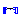 M_Transformer | Generic transformer with free number of inductors |
| Gyrator | Gyrator |
| 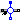 EMF | Electromotoric force (electric/mechanic transformer) |
| 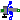 TranslationalEMF | Electromotoric force (electric/mechanic transformer) |
| VCV | Linear voltage-controlled voltage source |
| VCC | Linear voltage-controlled current source |
| CCV | Linear current-controlled voltage source |
| CCC | Linear current-controlled current source |
| Simple nonideal model of an OpAmp with limitation | |
| 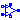 OpAmpDetailed | Detailed model of an operational amplifier |
| Ideal linear electrical resistor with variable resistance | |
| Ideal linear electrical conductor with variable conductance | |
| 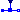 VariableCapacitor | Ideal linear electrical capacitor with variable capacitance |
| 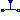 VariableInductor | Ideal linear electrical inductor with variable inductance |
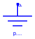
Ground of an electrical circuit. The potential at the ground node is zero. Every electrical circuit has to contain at least one ground object.
| Type | Name | Description |
|---|---|---|
| Pin | p |
model Ground "Ground node" Interfaces.Pin p; equation p.v = 0; end Ground;
 Modelica.Electrical.Analog.Basic.Resistor
Modelica.Electrical.Analog.Basic.Resistor

The linear resistor connects the branch voltage v with the branch current i by i*R = v. The Resistance R is allowed to be positive, zero, or negative.
Extends from Modelica.Electrical.Analog.Interfaces.OnePort (Component with two electrical pins p and n and current i from p to n), Modelica.Electrical.Analog.Interfaces.ConditionalHeatPort (Partial model to include a conditional HeatPort in order to describe the power loss via a thermal network).
| Type | Name | Default | Description |
|---|---|---|---|
| Resistance | R | Resistance R_ref at temperature T_ref [Ohm] | |
| Temperature | T_ref | 300.15 | Reference temperature [K] |
| LinearTemperatureCoefficient | alpha | 0 | Temperature coefficient of resistance (R_actual = R_ref*(1 + alpha*(heatPort.T - T_ref)) [1/K] |
| Boolean | useHeatPort | false | =true, if HeatPort is enabled |
| Temperature | T | T_ref | Fixed device temperature if useHeatPort = false [K] |
| Type | Name | Description |
|---|---|---|
| PositivePin | p | Positive pin (potential p.v > n.v for positive voltage drop v) |
| NegativePin | n | Negative pin |
| HeatPort_a | heatPort |
model Resistor "Ideal linear electrical resistor"
parameter Modelica.SIunits.Resistance R(start=1)
"Resistance R_ref at temperature T_ref";
parameter Modelica.SIunits.Temperature T_ref=300.15 "Reference temperature";
parameter Modelica.SIunits.LinearTemperatureCoefficient alpha=0
"Temperature coefficient of resistance (R_actual = R_ref*(1 + alpha*(heatPort.T - T_ref))";
extends Modelica.Electrical.Analog.Interfaces.OnePort;
extends Modelica.Electrical.Analog.Interfaces.ConditionalHeatPort(T = T_ref);
Modelica.SIunits.Resistance R_actual
"Resistance = R_ref*(1 + alpha*(intenalHeatPort.T - T_ref))";
equation
assert((1 + alpha*(T_heatPort - T_ref)) >= Modelica.Constants.eps, "Temperature outside scope of model!");
R_actual = R*(1 + alpha*(T_heatPort - T_ref));
v = R_actual*i;
LossPower = v*i;
end Resistor;
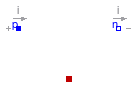
This is a model for an electrical resistor where the generated heat is dissipated to the environment via connector heatPort and where the resistance R is temperature dependent according to the following equation:
R = R_ref*(1 + alpha*(heatPort.T - T_ref))
alpha is the temperature coefficient of resistance, which is often abbreviated as TCR. In resistor catalogues, it is usually defined as X [ppm/K] (parts per million, similarly to per centage) meaning X*1.e-6 [1/K]. Resistors are available for 1 .. 7000 ppm/K, i.e., alpha = 1e-6 .. 7e-3 1/K;
Via parameter useHeatPort the heatPort connector can be enabled and disabled
(default = enabled). If it is disabled, the generated heat is transported implicitly
to an internal temperature source with a fixed temperature of T_ref.
If the heatPort connector is enabled, it must be connected.
Extends from Modelica.Electrical.Analog.Interfaces.OnePort (Component with two electrical pins p and n and current i from p to n), Modelica.Electrical.Analog.Interfaces.ConditionalHeatPort (Partial model to include a conditional HeatPort in order to describe the power loss via a thermal network).
| Type | Name | Default | Description |
|---|---|---|---|
| Resistance | R_ref | Resistance at temperature T_ref [Ohm] | |
| Temperature | T_ref | 300.15 | Reference temperature [K] |
| LinearTemperatureCoefficient | alpha | 0 | Temperature coefficient of resistance (R = R_ref*(1 + alpha*(heatPort.T - T_ref)) [1/K] |
| Boolean | useHeatPort | true | =true, if HeatPort is enabled |
| Temperature | T | T_ref | Fixed device temperature if useHeatPort = false [K] |
| Type | Name | Description |
|---|---|---|
| PositivePin | p | Positive pin (potential p.v > n.v for positive voltage drop v) |
| NegativePin | n | Negative pin |
| HeatPort_a | heatPort |
model HeatingResistor "Temperature dependent electrical resistor"
parameter Modelica.SIunits.Resistance R_ref(start=1)
"Resistance at temperature T_ref";
parameter Modelica.SIunits.Temperature T_ref=300.15 "Reference temperature";
parameter Modelica.SIunits.LinearTemperatureCoefficient alpha=0
"Temperature coefficient of resistance (R = R_ref*(1 + alpha*(heatPort.T - T_ref))";
extends Modelica.Electrical.Analog.Interfaces.OnePort;
extends Modelica.Electrical.Analog.Interfaces.ConditionalHeatPort(T = T_ref, useHeatPort=true);
Modelica.SIunits.Resistance R
"Resistance = R_ref*(1 + alpha*(intenalHeatPort.T - T_ref))";
equation
assert((1 + alpha*(T_heatPort - T_ref)) >= Modelica.Constants.eps, "Temperature outside scope of model!");
R = R_ref*(1 + alpha*(T_heatPort - T_ref));
v = R*i;
LossPower = v*i;
end HeatingResistor;
 Modelica.Electrical.Analog.Basic.Conductor
Modelica.Electrical.Analog.Basic.Conductor

The linear conductor connects the branch voltage v with the branch current i by i = v*G. The Conductance G is allowed to be positive, zero, or negative.
Extends from Modelica.Electrical.Analog.Interfaces.OnePort (Component with two electrical pins p and n and current i from p to n), Modelica.Electrical.Analog.Interfaces.ConditionalHeatPort (Partial model to include a conditional HeatPort in order to describe the power loss via a thermal network).
| Type | Name | Default | Description |
|---|---|---|---|
| Conductance | G | Conductance G_ref at temperature T_ref [S] | |
| Temperature | T_ref | 300.15 | Reference temperature [K] |
| LinearTemperatureCoefficient | alpha | 0 | Temperature coefficient of conductance (G_actual = G_ref/(1 + alpha*(heatPort.T - T_ref)) [1/K] |
| Boolean | useHeatPort | false | =true, if HeatPort is enabled |
| Temperature | T | T_ref | Fixed device temperature if useHeatPort = false [K] |
| Type | Name | Description |
|---|---|---|
| PositivePin | p | Positive pin (potential p.v > n.v for positive voltage drop v) |
| NegativePin | n | Negative pin |
| HeatPort_a | heatPort |
model Conductor "Ideal linear electrical conductor"
parameter Modelica.SIunits.Conductance G(start=1)
"Conductance G_ref at temperature T_ref";
parameter Modelica.SIunits.Temperature T_ref=300.15 "Reference temperature";
parameter Modelica.SIunits.LinearTemperatureCoefficient alpha=0
"Temperature coefficient of conductance (G_actual = G_ref/(1 + alpha*(heatPort.T - T_ref))";
extends Modelica.Electrical.Analog.Interfaces.OnePort;
extends Modelica.Electrical.Analog.Interfaces.ConditionalHeatPort(T = T_ref);
Modelica.SIunits.Conductance G_actual
"Conductance = G_ref/(1 + alpha*(intenalHeatPort.T - T_ref))";
equation
assert((1 + alpha*(T_heatPort - T_ref)) >= Modelica.Constants.eps, "Temperature outside scope of model!");
G_actual = G/(1 + alpha*(T_heatPort - T_ref));
i = G_actual*v;
LossPower = v*i;
end Conductor;
 Modelica.Electrical.Analog.Basic.Capacitor
Modelica.Electrical.Analog.Basic.Capacitor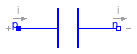
The linear capacitor connects the branch voltage v with the branch current i by i = C * dv/dt. The Capacitance C is allowed to be positive, zero, or negative.
Extends from Interfaces.OnePort (Component with two electrical pins p and n and current i from p to n).
| Type | Name | Default | Description |
|---|---|---|---|
| Capacitance | C | Capacitance [F] |
| Type | Name | Description |
|---|---|---|
| PositivePin | p | Positive pin (potential p.v > n.v for positive voltage drop v) |
| NegativePin | n | Negative pin |
model Capacitor "Ideal linear electrical capacitor" extends Interfaces.OnePort; parameter SI.Capacitance C(start=1) "Capacitance"; equation i = C*der(v); end Capacitor;
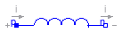
The linear inductor connects the branch voltage v with the branch current i by v = L * di/dt. The Inductance L is allowed to be positive, zero, or negative.
Extends from Interfaces.OnePort (Component with two electrical pins p and n and current i from p to n).
| Type | Name | Default | Description |
|---|---|---|---|
| Inductance | L | Inductance [H] |
| Type | Name | Description |
|---|---|---|
| PositivePin | p | Positive pin (potential p.v > n.v for positive voltage drop v) |
| NegativePin | n | Negative pin |
model Inductor "Ideal linear electrical inductor" extends Interfaces.OnePort; parameter SI.Inductance L(start=1) "Inductance"; equation L*der(i) = v; end Inductor;
 Modelica.Electrical.Analog.Basic.SaturatingInductor
Modelica.Electrical.Analog.Basic.SaturatingInductor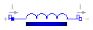
This model approximates the behaviour of an inductor with the influence of saturation,
i.e. the value of the inductance depends on the current flowing through the inductor.
The inductance decreases as current increases.
The parameters are:
Extends from Modelica.Electrical.Analog.Interfaces.OnePort (Component with two electrical pins p and n and current i from p to n).
| Type | Name | Default | Description |
|---|---|---|---|
| Current | Inom | Nominal current [A] | |
| Inductance | Lnom | Nominal inductance at Nominal current [H] | |
| Inductance | Lzer | Inductance near current=0 [H] | |
| Inductance | Linf | Inductance at large currents [H] |
| Type | Name | Description |
|---|---|---|
| PositivePin | p | Positive pin (potential p.v > n.v for positive voltage drop v) |
| NegativePin | n | Negative pin |
model SaturatingInductor
"Simple model of an inductor with saturation"
extends Modelica.Electrical.Analog.Interfaces.OnePort;
parameter Modelica.SIunits.Current Inom(start=1) "Nominal current";
parameter Modelica.SIunits.Inductance Lnom(start=1)
"Nominal inductance at Nominal current";
parameter Modelica.SIunits.Inductance Lzer(start=2*Lnom)
"Inductance near current=0";
parameter Modelica.SIunits.Inductance Linf(start=Lnom/2)
"Inductance at large currents";
Modelica.SIunits.Inductance Lact(start=Lzer);
Modelica.SIunits.MagneticFlux Psi;
protected
parameter Modelica.SIunits.Current Ipar(start=Inom/10, fixed=false);
initial equation
(Lnom - Linf) = (Lzer - Linf)*Ipar/Inom*(Modelica.Constants.pi/2-Modelica.Math.atan(Ipar/Inom));
equation
assert(Lzer > Lnom+Modelica.Constants.eps,
"Lzer (= " + String(Lzer) + ") has to be > Lnom (= " + String(Lnom) + ")");
assert(Linf < Lnom-Modelica.Constants.eps,
"Linf (= " + String(Linf) + ") has to be < Lnom (= " + String(Lnom) + ")");
(Lact - Linf)*i/Ipar = (Lzer - Linf)*noEvent(Modelica.Math.atan(i/Ipar));
Psi = Lact*i;
v = der(Psi);
end SaturatingInductor;
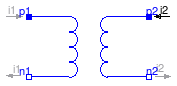
The transformer is a two port. The left port voltage v1, left port current i1, right port voltage v2 and right port current i2 are connected by the following relation:
| v1 | | L1 M | | i1' |
| | = | | | |
| v2 | | M L2 | | i2' |
L1, L2, and M are the primary, secondary, and coupling inductances respectively.
Extends from Interfaces.TwoPort (Component with two electrical ports, including current).
| Type | Name | Default | Description |
|---|---|---|---|
| Inductance | L1 | Primary inductance [H] | |
| Inductance | L2 | Secondary inductance [H] | |
| Inductance | M | Coupling inductance [H] |
| Type | Name | Description |
|---|---|---|
| PositivePin | p1 | Positive pin of the left port (potential p1.v > n1.v for positive voltage drop v1) |
| NegativePin | n1 | Negative pin of the left port |
| PositivePin | p2 | Positive pin of the right port (potential p2.v > n2.v for positive voltage drop v2) |
| NegativePin | n2 | Negative pin of the right port |
model Transformer "Transformer with two ports" extends Interfaces.TwoPort; parameter SI.Inductance L1(start=1) "Primary inductance"; parameter SI.Inductance L2(start=1) "Secondary inductance"; parameter SI.Inductance M(start=1) "Coupling inductance"; equation v1 = L1*der(i1) + M*der(i2); v2 = M*der(i1) + L2*der(i2); end Transformer;
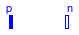
| 1 | 0.1 | 0.2 | ||
| Lm | = | 0.1 | 2 | 0.3 |
| 0.2 | 0.3 | 3 |
| Type | Name | Default | Description |
|---|---|---|---|
| Integer | N | 3 | number of inductors |
| Inductance | L[dimL] | {1,0.1,0.2,2,0.3,3} | inductances and coupling inductances [H] |
| Type | Name | Description |
|---|---|---|
| PositivePin | p[N] | Positive pin |
| NegativePin | n[N] | Negative pin |
model M_Transformer
"Generic transformer with free number of inductors"
parameter Integer N(final min=1)=3 "number of inductors";
protected
parameter Integer dimL=div(N*(N+1),2);
public
parameter Modelica.SIunits.Inductance L[dimL]={1,0.1,0.2,2,0.3,3}
"inductances and coupling inductances";
Modelica.Electrical.Analog.Interfaces.PositivePin p[N] "Positive pin";
Modelica.Electrical.Analog.Interfaces.NegativePin n[N] "Negative pin";
Modelica.SIunits.Voltage v[N];
Modelica.SIunits.Current i[N];
Modelica.SIunits.Inductance Lm[N,N];
algorithm
for s in 1:N loop
for z in 1:N loop
Lm[z,s]:= if (z>=s) then L[(s-1)*N+z-div((s-1)*s,2)] else
Lm[s,z];
end for;
end for;
equation
for j in 1:N loop
v[j] = p[j].v - n[j].v;
0 = p[j].i + n[j].i;
i[j] = p[j].i;
end for;
v =Lm*der(i);
end M_Transformer;
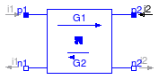
A gyrator is a two-port element defined by the following equations:
i1 = G2 * v2
i2 = -G1 * v1
where the constants G1, G2 are called the gyration conductance.
Extends from Interfaces.TwoPort (Component with two electrical ports, including current).
| Type | Name | Default | Description |
|---|---|---|---|
| Conductance | G1 | Gyration conductance [S] | |
| Conductance | G2 | Gyration conductance [S] |
| Type | Name | Description |
|---|---|---|
| PositivePin | p1 | Positive pin of the left port (potential p1.v > n1.v for positive voltage drop v1) |
| NegativePin | n1 | Negative pin of the left port |
| PositivePin | p2 | Positive pin of the right port (potential p2.v > n2.v for positive voltage drop v2) |
| NegativePin | n2 | Negative pin of the right port |
model Gyrator "Gyrator" extends Interfaces.TwoPort; parameter SI.Conductance G1(start=1) "Gyration conductance"; parameter SI.Conductance G2(start=1) "Gyration conductance"; equation i1 = G2*v2; i2 = -G1*v1; end Gyrator;
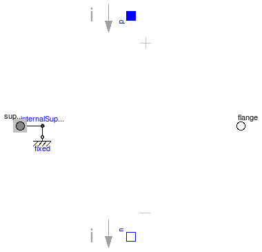
EMF transforms electrical energy into rotational mechanical energy. It is used as basic building block of an electrical motor. The mechanical connector flange can be connected to elements of the Modelica.Mechanics.Rotational library. flange.tau is the cut-torque, flange.phi is the angle at the rotational connection.
| Type | Name | Default | Description |
|---|---|---|---|
| Boolean | useSupport | false | = true, if support flange enabled, otherwise implicitly grounded |
| ElectricalTorqueConstant | k | Transformation coefficient [N.m/A] |
| Type | Name | Description |
|---|---|---|
| PositivePin | p | |
| NegativePin | n | |
| Flange_b | flange | |
| Support | support | Support/housing of emf shaft |
model EMF "Electromotoric force (electric/mechanic transformer)"
parameter Boolean useSupport=false
"= true, if support flange enabled, otherwise implicitly grounded";
parameter SI.ElectricalTorqueConstant k(start=1) "Transformation coefficient";
SI.Voltage v "Voltage drop between the two pins";
SI.Current i "Current flowing from positive to negative pin";
SI.Angle phi
"Angle of shaft flange with respect to support (= flange.phi - support.phi)";
SI.AngularVelocity w "Angular velocity of flange relative to support";
Interfaces.PositivePin p;
Interfaces.NegativePin n;
Modelica.Mechanics.Rotational.Interfaces.Flange_b flange;
Mechanics.Rotational.Interfaces.Support support if useSupport
"Support/housing of emf shaft";
protected
Mechanics.Rotational.Components.Fixed fixed if not useSupport;
Mechanics.Rotational.Interfaces.InternalSupport internalSupport(tau=-flange.tau);
equation
v = p.v - n.v;
0 = p.i + n.i;
i = p.i;
phi = flange.phi - internalSupport.phi;
w = der(phi);
k*w = v;
flange.tau = -k*i;
connect(internalSupport.flange, support);
connect(internalSupport.flange,fixed. flange);
end EMF;
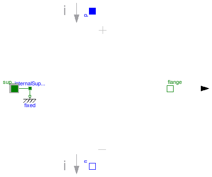
EMF transforms electrical energy into translational mechanical energy. It is used as basic building block of an electrical linear motor. The mechanical connector flange can be connected to elements of the Modelica.Mechanics.Translational library. flange.f is the cut-force, flange.s is the distance at the translational connection.
| Type | Name | Default | Description |
|---|---|---|---|
| Boolean | useSupport | false | = true, if support flange enabled, otherwise implicitly grounded |
| ElectricalForceConstant | k | Transformation coefficient [N/A] |
| Type | Name | Description |
|---|---|---|
| PositivePin | p | |
| NegativePin | n | |
| Flange_b | flange | |
| Support | support | Support/housing |
model TranslationalEMF
"Electromotoric force (electric/mechanic transformer)"
parameter Boolean useSupport=false
"= true, if support flange enabled, otherwise implicitly grounded";
parameter Modelica.SIunits.ElectricalForceConstant k(start=1)
"Transformation coefficient";
Modelica.SIunits.Voltage v "Voltage drop between the two pins";
Modelica.SIunits.Current i "Current flowing from positive to negative pin";
Modelica.SIunits.Position s "Position of flange relative to support";
Modelica.SIunits.Velocity vel "Velocity of flange relative to support";
Modelica.Electrical.Analog.Interfaces.PositivePin p;
Modelica.Electrical.Analog.Interfaces.NegativePin n;
Modelica.Mechanics.Translational.Interfaces.Flange_b flange;
Modelica.Mechanics.Translational.Interfaces.Support support if useSupport
"Support/housing";
protected
Modelica.Mechanics.Translational.Components.Fixed fixed if not useSupport;
Modelica.Mechanics.Translational.Interfaces.InternalSupport internalSupport(f=-flange.f);
equation
v = p.v - n.v;
0 = p.i + n.i;
i = p.i;
s = flange.s - internalSupport.s;
vel = der(s);
k*vel = v;
flange.f = -k*i;
connect(internalSupport.flange, support);
connect(internalSupport.flange, fixed.flange);
end TranslationalEMF;
 Modelica.Electrical.Analog.Basic.VCV
Modelica.Electrical.Analog.Basic.VCV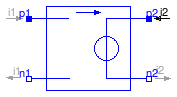
The linear voltage-controlled voltage source is a TwoPort. The right port voltage v2 is controlled by the left port voltage v1 via
v2 = v1 * gain.
The left port current is zero. Any voltage gain can be chosen.
Extends from Interfaces.TwoPort (Component with two electrical ports, including current).
| Type | Name | Default | Description |
|---|---|---|---|
| Real | gain | Voltage gain |
| Type | Name | Description |
|---|---|---|
| PositivePin | p1 | Positive pin of the left port (potential p1.v > n1.v for positive voltage drop v1) |
| NegativePin | n1 | Negative pin of the left port |
| PositivePin | p2 | Positive pin of the right port (potential p2.v > n2.v for positive voltage drop v2) |
| NegativePin | n2 | Negative pin of the right port |
model VCV "Linear voltage-controlled voltage source" extends Interfaces.TwoPort; parameter Real gain(start=1) "Voltage gain"; equation v2 = v1*gain; i1 = 0; end VCV;
 Modelica.Electrical.Analog.Basic.VCC
Modelica.Electrical.Analog.Basic.VCC
The linear voltage-controlled current source is a TwoPort. The right port current i2 is controlled by the left port voltage v1 via
i2 = v1 * transConductance.
The left port current is zero. Any transConductance can be chosen.
Extends from Interfaces.TwoPort (Component with two electrical ports, including current).
| Type | Name | Default | Description |
|---|---|---|---|
| Conductance | transConductance | Transconductance [S] |
| Type | Name | Description |
|---|---|---|
| PositivePin | p1 | Positive pin of the left port (potential p1.v > n1.v for positive voltage drop v1) |
| NegativePin | n1 | Negative pin of the left port |
| PositivePin | p2 | Positive pin of the right port (potential p2.v > n2.v for positive voltage drop v2) |
| NegativePin | n2 | Negative pin of the right port |
model VCC "Linear voltage-controlled current source" extends Interfaces.TwoPort; parameter SI.Conductance transConductance(start=1) "Transconductance"; equation i2 = v1*transConductance; i1 = 0; end VCC;
 Modelica.Electrical.Analog.Basic.CCV
Modelica.Electrical.Analog.Basic.CCV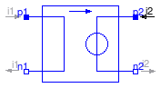
The linear current-controlled voltage source is a TwoPort. The right port voltage v2 is controlled by the left port current i1 via
v2 = i1 * transResistance.
The left port voltage is zero. Any transResistance can be chosen.
Extends from Interfaces.TwoPort (Component with two electrical ports, including current).
| Type | Name | Default | Description |
|---|---|---|---|
| Resistance | transResistance | Transresistance [Ohm] |
| Type | Name | Description |
|---|---|---|
| PositivePin | p1 | Positive pin of the left port (potential p1.v > n1.v for positive voltage drop v1) |
| NegativePin | n1 | Negative pin of the left port |
| PositivePin | p2 | Positive pin of the right port (potential p2.v > n2.v for positive voltage drop v2) |
| NegativePin | n2 | Negative pin of the right port |
model CCV "Linear current-controlled voltage source" extends Interfaces.TwoPort; parameter SI.Resistance transResistance(start=1) "Transresistance"; equation v2 = i1*transResistance; v1 = 0; end CCV;
 Modelica.Electrical.Analog.Basic.CCC
Modelica.Electrical.Analog.Basic.CCC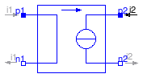
The linear current-controlled current source is a TwoPort. The right port current i2 is controlled by the left port current i1 via
i2 = i1 * gain.
The left port voltage is zero. Any current gain can be chosen.
Extends from Interfaces.TwoPort (Component with two electrical ports, including current).
| Type | Name | Default | Description |
|---|---|---|---|
| Real | gain | Current gain |
| Type | Name | Description |
|---|---|---|
| PositivePin | p1 | Positive pin of the left port (potential p1.v > n1.v for positive voltage drop v1) |
| NegativePin | n1 | Negative pin of the left port |
| PositivePin | p2 | Positive pin of the right port (potential p2.v > n2.v for positive voltage drop v2) |
| NegativePin | n2 | Negative pin of the right port |
model CCC "Linear current-controlled current source" extends Interfaces.TwoPort; parameter Real gain(start=1) "Current gain"; equation i2 = i1*gain; v1 = 0; end CCC;

The OpAmp is a simle nonideal model with a smooth out.v = f(vin) characteristic, where "vin = in_p.v - in_n.v". The characteristic is limited by VMax.v and VMin.v. Its slope at vin=0 is the parameter Slope, which must be positive. (Therefore, the absolute value of Slope is taken into calculation.)
| Type | Name | Default | Description |
|---|---|---|---|
| Real | Slope | Slope of the out.v/vin characteristic at vin=0 |
| Type | Name | Description |
|---|---|---|
| PositivePin | in_p | Positive pin of the input port |
| NegativePin | in_n | Negative pin of the input port |
| PositivePin | out | Output pin |
| PositivePin | VMax | Positive output voltage limitation |
| NegativePin | VMin | Negative output voltage limitation |
model OpAmp "Simple nonideal model of an OpAmp with limitation"
parameter Real Slope(start=1)
"Slope of the out.v/vin characteristic at vin=0";
Modelica.Electrical.Analog.Interfaces.PositivePin in_p
"Positive pin of the input port";
Modelica.Electrical.Analog.Interfaces.NegativePin in_n
"Negative pin of the input port";
Modelica.Electrical.Analog.Interfaces.PositivePin out "Output pin";
Modelica.Electrical.Analog.Interfaces.PositivePin VMax
"Positive output voltage limitation";
Modelica.Electrical.Analog.Interfaces.NegativePin VMin
"Negative output voltage limitation";
SI.Voltage vin "input voltagae";
protected
Real f "auxiliary variable";
Real absSlope;
equation
in_p.i = 0;
in_n.i = 0;
VMax.i = 0;
VMin.i = 0;
vin = in_p.v - in_n.v;
f = 2/(VMax.v - VMin.v);
absSlope = smooth(0,(if (Slope < 0) then -Slope else Slope));
out.v = (VMax.v + VMin.v)/2 + absSlope*vin/(1 + absSlope*smooth(0,(if (f*vin
< 0) then -f*vin else f*vin)));
end OpAmp;
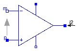
The OpAmpDetailed model is a general operational amplifier model. The emphasis is on separating each important data sheet parameter into a sub-circuit independent of the other parameters. The model is broken down into five functional stages input, frequency response, gain, slew rate and an output stage. Each stage contains data sheet parameters to be modeled. This partitioning and the modelling of the separate submodels are based on the description in [CP92].
Using [CP92] Joachim Haase (Fraunhofer Institute for Integrated Circuits, Design Automation Division) transfered 2001 operational amplifier models into VHDL-AMS. Now one of these models, the model "amp(macro)" was transferred into Modelica.
| Type | Name | Default | Description |
|---|---|---|---|
| Resistance | Rdm | 2.0e6 | input resistance (differential input mode) [Ohm] |
| Resistance | Rcm | 2.0e9 | input resistance (common mode) [Ohm] |
| Capacitance | Cin | 1.4e-12 | input capacitance [F] |
| Voltage | Vos | 1.0e-3 | input offset voltage [V] |
| Current | Ib | 80.0e-9 | input bias current [A] |
| Current | Ios | 20.0e-9 | input offset current [A] |
| Voltage | vcp | 0.0 | correction value for limiting by p_supply [V] |
| Voltage | vcm | 0.0 | correction value for limiting by msupply [V] |
| Real | Avd0 | 106.0 | differential amplifier [dB] |
| Real | CMRR | 90.0 | common-mode rejection [dB] |
| Frequency | fp1 | 5.0 | dominant pole [Hz] |
| Frequency | fp2 | 2.0e6 | pole frequency [Hz] |
| Frequency | fp3 | 20.0e6 | pole frequency [Hz] |
| Frequency | fp4 | 100.0e6 | pole frequency [Hz] |
| Frequency | fz | 5.0e6 | zero frequency [Hz] |
| VoltageSlope | sr_p | 0.5e6 | slew rate for increase [V/s] |
| VoltageSlope | sr_m | 0.5e6 | slew rate for decrease [V/s] |
| Resistance | Rout | 75.0 | output resistance [Ohm] |
| Current | Imaxso | 25.0e-3 | maximal output current (source current) [A] |
| Current | Imaxsi | 25.0e-3 | maximal output current (sink current) [A] |
| Time | Ts | 0.0000012 | sampling time [s] |
| Type | Name | Description |
|---|---|---|
| PositivePin | p | Positive pin of the input port |
| NegativePin | m | Negative pin of the input port |
| PositivePin | outp | Output pin |
| PositivePin | p_supply | Positive output voltage limitation |
| NegativePin | m_supply | Negative output voltage limitation |
model OpAmpDetailed "Detailed model of an operational amplifier"
// literature: Conelly, J.A.; Choi, P.: Macromodelling with SPICE. Englewood Cliffs: Prentice-Hall, 1992
import SI = Modelica.SIunits;
parameter SI.Resistance Rdm=2.0e6
"input resistance (differential input mode)";
parameter SI.Resistance Rcm=2.0e9 "input resistance (common mode)";
parameter SI.Capacitance Cin=1.4e-12 "input capacitance";
parameter SI.Voltage Vos=1.0e-3 "input offset voltage";
parameter SI.Current Ib=80.0e-9 "input bias current";
parameter SI.Current Ios=20.0e-9 "input offset current";
parameter SI.Voltage vcp=0.0 "correction value for limiting by p_supply";
parameter SI.Voltage vcm=0.0 "correction value for limiting by msupply";
parameter Real Avd0=106.0 "differential amplifier [dB]";
parameter Real CMRR=90.0 "common-mode rejection [dB]";
parameter SI.Frequency fp1=5.0 "dominant pole";
parameter SI.Frequency fp2=2.0e6 "pole frequency";
parameter SI.Frequency fp3=20.0e6 "pole frequency";
parameter SI.Frequency fp4=100.0e6 "pole frequency";
parameter SI.Frequency fz=5.0e6 "zero frequency";
parameter SI.VoltageSlope sr_p=0.5e6 "slew rate for increase";
parameter SI.VoltageSlope sr_m=0.5e6 "slew rate for decrease";
parameter SI.Resistance Rout=75.0 "output resistance";
parameter SI.Current Imaxso=25.0e-3 "maximal output current (source current)";
parameter SI.Current Imaxsi=25.0e-3 "maximal output current (sink current)";
// number of intervalls: 2500, stop time: 0.003
parameter SI.Time Ts=0.0000012 "sampling time";
// constant expressions
constant Real Pi=3.141592654;
// power supply
final parameter SI.Voltage vcp_abs = abs(vcp);
final parameter SI.Voltage vcm_abs = abs(vcm);
// input stage
// Ib = 0.5*(I1 + I2);
// Ios = I1 - I2;
final parameter SI.Current I1 = Ib + Ios/2.0;
final parameter SI.Current I2 = Ib - Ios/2.0;
// gain stage (difference and common mode)
final parameter Real Avd0_val = 10.0^(Avd0/20.0) "differential mode gain";
final parameter Real Avcm_val = (Avd0_val/(10.0^(CMRR/20.0)))/2.0
"common mode gain";
// slew rate stage
final parameter SI.VoltageSlope sr_p_val = abs(sr_p);
final parameter SI.VoltageSlope sr_m_val = -abs(sr_m);
// output stage
final parameter SI.Current Imaxso_val = abs(Imaxso) "orientation out outp";
final parameter SI.Current Imaxsi_val = abs(Imaxsi) "orientation into outp";
Modelica.Electrical.Analog.Interfaces.PositivePin p
"Positive pin of the input port";
Modelica.Electrical.Analog.Interfaces.NegativePin m
"Negative pin of the input port";
Modelica.Electrical.Analog.Interfaces.PositivePin outp "Output pin";
Modelica.Electrical.Analog.Interfaces.PositivePin p_supply
"Positive output voltage limitation";
Modelica.Electrical.Analog.Interfaces.NegativePin m_supply
"Negative output voltage limitation";
// power supply
SI.Voltage v_pos;
SI.Voltage v_neg;
// input stage
Modelica.SIunits.Voltage v_vos;
Modelica.SIunits.Voltage v_3;
Modelica.SIunits.Voltage v_in;
Modelica.SIunits.Voltage v_4;
Modelica.SIunits.Current i_vos;
Modelica.SIunits.Current i_3;
Modelica.SIunits.Current i_r2;
Modelica.SIunits.Current i_c3;
Modelica.SIunits.Current i_4;
// frequency response
Real q_fr1;
Real q_fr2;
Real q_fr3;
// gain stage
SI.Voltage q_sum;
SI.Voltage q_sum_help;
SI.Voltage q_fp1;
// slew rate stage
SI.Voltage v_source;
SI.Voltage x "auxiliary variable for slew rate";
// output stage
Modelica.SIunits.Voltage v_out;
Modelica.SIunits.Current i_out;
// functions
function FCNiout_limit
input SI.Voltage v_source;
input SI.Voltage v_out;
input SI.Resistance Rout;
input SI.Current Imaxsi_val;
input SI.Current Imaxso_val;
output SI.Current result;
algorithm
if v_out > v_source + Rout*Imaxsi_val then
result := Imaxsi_val;
elseif v_out < v_source - Rout*Imaxso_val then
result := -Imaxso_val;
else
result := (v_out - v_source)/Rout;
end if;
return;
end FCNiout_limit;
function FCNq_sum_limit
input SI.Voltage q_sum;
input SI.Voltage q_sum_ltf;
input SI.Voltage v_pos;
input SI.Voltage v_neg;
input SI.Voltage vcp;
input SI.Voltage vcm;
output SI.Voltage result;
algorithm
if q_sum > v_pos - vcp and q_sum_ltf >= v_pos - vcp then
result := v_pos - vcp;
elseif q_sum < v_neg + vcm and q_sum_ltf <= v_neg + vcm then
result := v_neg + vcm;
else
result := q_sum;
end if;
return;
end FCNq_sum_limit;
equation
assert(Rout > 0.0, "Rout must be > 0.0.");
// power supply
v_pos = p_supply.v;
v_neg = m_supply.v;
// input stage
p.i = i_vos;
m.i = i_4 - i_r2 - i_c3;
0 = i_3 + i_r2 + i_c3 - i_vos;
p.v - m.v = v_vos + v_in;
v_4 = m.v;
v_3 = p.v - v_vos;
v_vos = Vos;
i_3 = I1 + v_3/Rcm;
v_in = Rdm*i_r2;
i_c3 = Cin*der(v_in);
i_4 = I2 + v_4/Rcm;
// frequency response
// Laplace transformation
der(q_fr1) = 2.0*Pi*fp2*(v_in - q_fr1);
q_fr2 + (1.0/(2.0*Pi*fp3))*der(q_fr2) = q_fr1 + (1.0/(2.0*Pi*fz))*der(q_fr1);
der(q_fr3) = 2.0*Pi*fp4*(q_fr2 - q_fr3);
// gain stage
// Laplace transformation
q_sum = Avd0_val*q_fr3 + Avcm_val*(v_3 + v_4);
q_sum_help = FCNq_sum_limit(
q_sum,
q_fp1,
v_pos,
v_neg,
vcp_abs,
vcm_abs);
der(q_fp1) = 2.0*Pi*fp1*(q_sum_help - q_fp1);
// slew rate stage
if initial() then
v_source = q_fp1;
x = 0;
end if;
der(x) = (q_fp1 - v_source)/Ts;
der(v_source) = smooth(0,noEvent(
if der(x) > sr_p_val then sr_p_val else
if der(x) < sr_m_val then sr_m_val else
der(x)));
// output stage
v_out = outp.v;
i_out = outp.i;
i_out = FCNiout_limit(
v_source,
v_out,
Rout,
Imaxsi_val,
Imaxso_val);
p_supply.i = 0;
m_supply.i = 0;
end OpAmpDetailed;
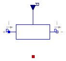
The linear resistor connects the branch voltage v with the
branch current i by
i*R = v
The Resistance R is given as input signal.
Attention!!!
It is recommended that the R signal should not cross the zero value. Otherwise
depending on the surrounding circuit the probability of singularities is high.
Extends from Modelica.Electrical.Analog.Interfaces.OnePort (Component with two electrical pins p and n and current i from p to n), Modelica.Electrical.Analog.Interfaces.ConditionalHeatPort (Partial model to include a conditional HeatPort in order to describe the power loss via a thermal network).
| Type | Name | Default | Description |
|---|---|---|---|
| Temperature | T_ref | 300.15 | Reference temperature [K] |
| LinearTemperatureCoefficient | alpha | 0 | Temperature coefficient of resistance (R_actual = R*(1 + alpha*(heatPort.T - T_ref)) [1/K] |
| Boolean | useHeatPort | false | =true, if HeatPort is enabled |
| Temperature | T | T_ref | Fixed device temperature if useHeatPort = false [K] |
| Type | Name | Description |
|---|---|---|
| PositivePin | p | Positive pin (potential p.v > n.v for positive voltage drop v) |
| NegativePin | n | Negative pin |
| HeatPort_a | heatPort | |
| input RealInput | R |
model VariableResistor
"Ideal linear electrical resistor with variable resistance"
parameter Modelica.SIunits.Temperature T_ref=300.15 "Reference temperature";
parameter Modelica.SIunits.LinearTemperatureCoefficient alpha=0
"Temperature coefficient of resistance (R_actual = R*(1 + alpha*(heatPort.T - T_ref))";
extends Modelica.Electrical.Analog.Interfaces.OnePort;
extends Modelica.Electrical.Analog.Interfaces.ConditionalHeatPort(T = T_ref);
Modelica.SIunits.Resistance R_actual
"Resistance = R*(1 + alpha*(intenalHeatPort.T - T_ref))";
Modelica.Blocks.Interfaces.RealInput R;
equation
assert((1 + alpha*(T_heatPort - T_ref)) >= Modelica.Constants.eps, "Temperature outside scope of model!");
R_actual = R*(1 + alpha*(T_heatPort - T_ref));
v = R_actual*i;
LossPower = v*i;
end VariableResistor;
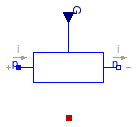
The linear conductor connects the branch voltage v with the
branch current i by
i = G*v
The Conductance G is given as input signal.
Attention!!!
It is recommended that the G signal should not cross the zero value. Otherwise
depending on the surrounding circuit the probability of singularities is high.
Extends from Modelica.Electrical.Analog.Interfaces.OnePort (Component with two electrical pins p and n and current i from p to n), Modelica.Electrical.Analog.Interfaces.ConditionalHeatPort (Partial model to include a conditional HeatPort in order to describe the power loss via a thermal network).
| Type | Name | Default | Description |
|---|---|---|---|
| Temperature | T_ref | 300.15 | Reference temperature [K] |
| LinearTemperatureCoefficient | alpha | 0 | Temperature coefficient of conductance (G_actual = G/(1 + alpha*(heatPort.T - T_ref)) [1/K] |
| Boolean | useHeatPort | false | =true, if HeatPort is enabled |
| Temperature | T | T_ref | Fixed device temperature if useHeatPort = false [K] |
| Type | Name | Description |
|---|---|---|
| PositivePin | p | Positive pin (potential p.v > n.v for positive voltage drop v) |
| NegativePin | n | Negative pin |
| HeatPort_a | heatPort | |
| input RealInput | G |
model VariableConductor
"Ideal linear electrical conductor with variable conductance"
parameter Modelica.SIunits.Temperature T_ref=300.15 "Reference temperature";
parameter Modelica.SIunits.LinearTemperatureCoefficient alpha=0
"Temperature coefficient of conductance (G_actual = G/(1 + alpha*(heatPort.T - T_ref))";
extends Modelica.Electrical.Analog.Interfaces.OnePort;
extends Modelica.Electrical.Analog.Interfaces.ConditionalHeatPort(T = T_ref);
Modelica.SIunits.Conductance G_actual
"Conductance = G_ref/(1 + alpha*(intenalHeatPort.T - T_ref))";
Modelica.Blocks.Interfaces.RealInput G;
equation
assert((1 + alpha*(T_heatPort - T_ref)) >= Modelica.Constants.eps, "Temperature outside scope of model!");
G_actual = G/(1 + alpha*(T_heatPort - T_ref));
i = G_actual*v;
LossPower = v*i;
end VariableConductor;
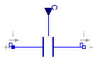
The linear capacitor connects the branch voltage v with the
branch current i by
i = dQ/dt with Q = C * v .
The capacitance C is given as input signal.
It is required that C ≥ 0, otherwise an
assertion is raised. To avoid a variable index system,
C = Cmin, if 0 ≤ C < Cmin, where
Cmin is a parameter with default value Modelica.Constants.eps.
Extends from Modelica.Electrical.Analog.Interfaces.OnePort (Component with two electrical pins p and n and current i from p to n).
| Type | Name | Default | Description |
|---|---|---|---|
| Capacitance | Cmin | Modelica.Constants.eps | lower bound for variable capacitance [F] |
| Type | Name | Description |
|---|---|---|
| PositivePin | p | Positive pin (potential p.v > n.v for positive voltage drop v) |
| NegativePin | n | Negative pin |
| input RealInput | C |
model VariableCapacitor
"Ideal linear electrical capacitor with variable capacitance"
extends Modelica.Electrical.Analog.Interfaces.OnePort;
Modelica.Blocks.Interfaces.RealInput C;
parameter Modelica.SIunits.Capacitance Cmin=Modelica.Constants.eps
"lower bound for variable capacitance";
Modelica.SIunits.ElectricCharge Q;
equation
assert(C>=0,"Capacitance C (= " +
String(C) + ") has to be >= 0!");
// protect solver from index change
Q = noEvent(max(C,Cmin))*v;
i = der(Q);
end VariableCapacitor;
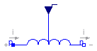
The linear inductor connects the branch voltage v with the
branch current i by
v = d Psi/dt with Psi = L * i .
The inductance L is as input signal.
It is required that L ≥ 0, otherwise an
assertion is raised. To avoid a variable index system,
L = Lmin, if 0 ≤ L < Lmin, where
Lmin is a parameter with default value Modelica.Constants.eps.
Extends from Modelica.Electrical.Analog.Interfaces.OnePort (Component with two electrical pins p and n and current i from p to n).
| Type | Name | Default | Description |
|---|---|---|---|
| Inductance | Lmin | Modelica.Constants.eps | lower bound for variable inductance [H] |
| Type | Name | Description |
|---|---|---|
| PositivePin | p | Positive pin (potential p.v > n.v for positive voltage drop v) |
| NegativePin | n | Negative pin |
| input RealInput | L |
model VariableInductor
"Ideal linear electrical inductor with variable inductance"
extends Modelica.Electrical.Analog.Interfaces.OnePort;
Modelica.Blocks.Interfaces.RealInput L;
Modelica.SIunits.MagneticFlux Psi;
parameter Modelica.SIunits.Inductance Lmin=Modelica.Constants.eps
"lower bound for variable inductance";
equation
assert(L>=0,"Inductance L_ (= " +
String(L) + ") has to be >= 0!");
// protect solver from index change
Psi = noEvent(max(L,Lmin))*i;
v = der(Psi);
end VariableInductor;